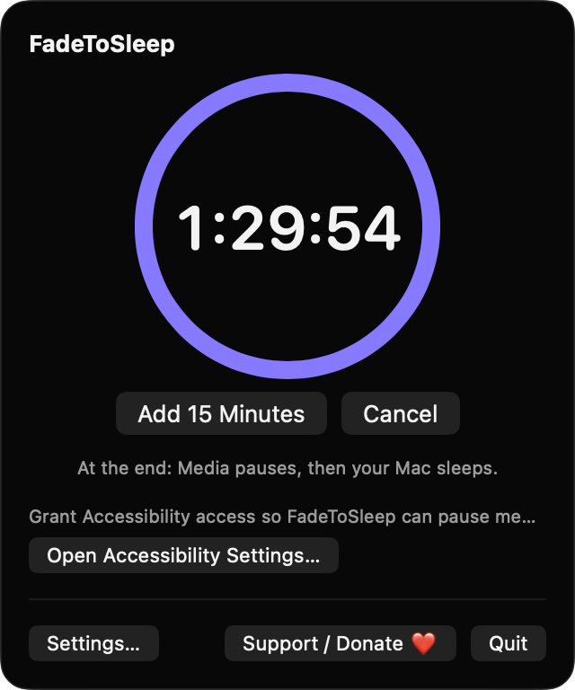
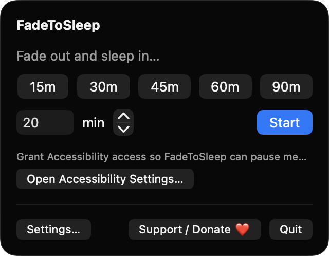
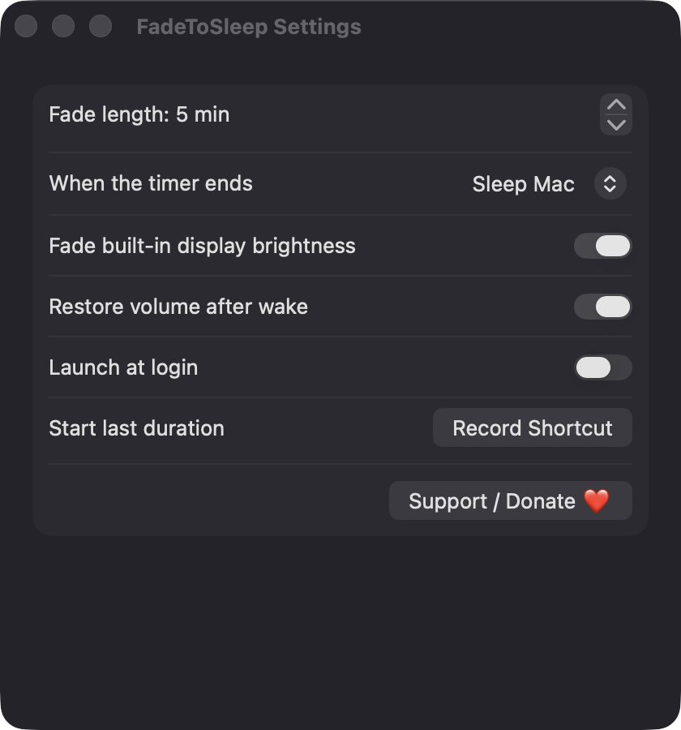

Smooth volume fade
Output volume ramps linearly to zero over the final minutes of the timer, updated every second. The fade window defaults to 5 minutes and can be set from 1 to 60.
Open source · macOS 14+ · Universal binary · Audio
Pick a duration from the menu bar and FadeToSleep gently lowers volume and screen brightness, pauses your media, then sleeps your Mac. Record a global hotkey to restart your last timer.
Free & MIT licensed · Apple Silicon & Intel · Latest release

Features
Everything runs locally in the menu bar, with no accounts and no network access.
Output volume ramps linearly to zero over the final minutes of the timer, updated every second. The fade window defaults to 5 minutes and can be set from 1 to 60.
The built-in display dims along with the volume. If your Mac has no built-in display, this step is skipped silently, and brightness is always restored afterward.
Start with 15, 30, 45, 60 or 90 minutes, or enter any value from 1 to 600. A progress ring shows the time left, with Add 15 Minutes and Cancel buttons.
Sleep the Mac, sleep only the display, or just pause. FadeToSleep sends the system Play/Pause key first, so podcasts and videos stop before sleep.
If you adjust the volume during a fade, the fade pauses and the menu offers Resume Fade. Volume and brightness are restored if you quit mid-fade, and volume can be restored after wake.
Record a global shortcut that starts your last-used duration, and optionally launch at login. A notification warns you one minute before the fade begins.
Screenshots


Install
FadeToSleep is open source and not notarized with a paid Apple Developer ID, so macOS needs one extra step the first time.
xattr -cr /Applications/FadeToSleep.app
Download
Free, forever. Built for macOS 14 Sonoma or newer, Apple Silicon and Intel.
Not notarized: on first launch right-click FadeToSleep.app → Open.
FAQ
Yes. It is released under the MIT license, and the full source is on GitHub. There are no accounts, no ads and no tracking. If it helps you, you can optionally support development through the Support button.
Accessibility is used only to send the Play/Pause media key at the end of the timer. Without it, the fade and sleep still work but media is not paused. Notifications are optional, and it never asks for Screen Recording or Microphone access.
Only on your Mac. Your settings are saved locally in the app's preferences, and FadeToSleep makes no network connections. Volume and brightness are controlled directly through Core Audio and IOKit.
Notarization requires a paid Apple Developer account, which this free project does not have. Right-click the app and choose Open once to approve it, or build it yourself from source with Xcode.
Yes. FadeToSleep was generated by Claude Code from a written spec as a clean-room reimplementation, with no code or assets from any commercial app. The full source is on GitHub under MIT, so you can read every line before you run it. It has had less human review than a hand-written app, so bug reports are welcome.
Support ❤️
FadeToSleep is a free, open-source alternative to paid utilities. If it earns a spot on your Mac, a coffee keeps the updates coming.
☕ Support Or on Ko-fi